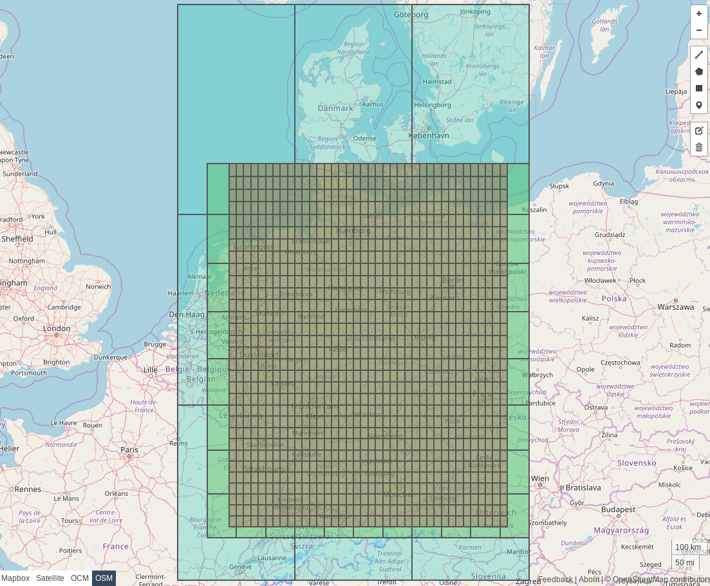
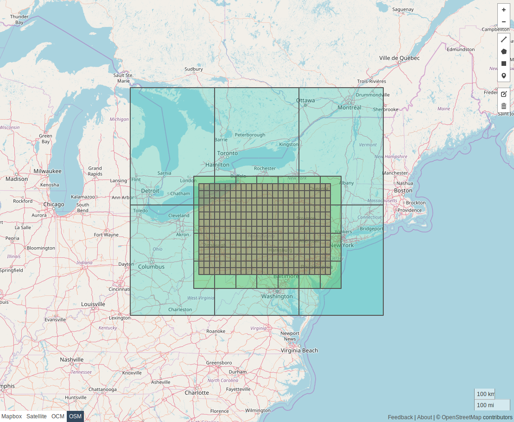
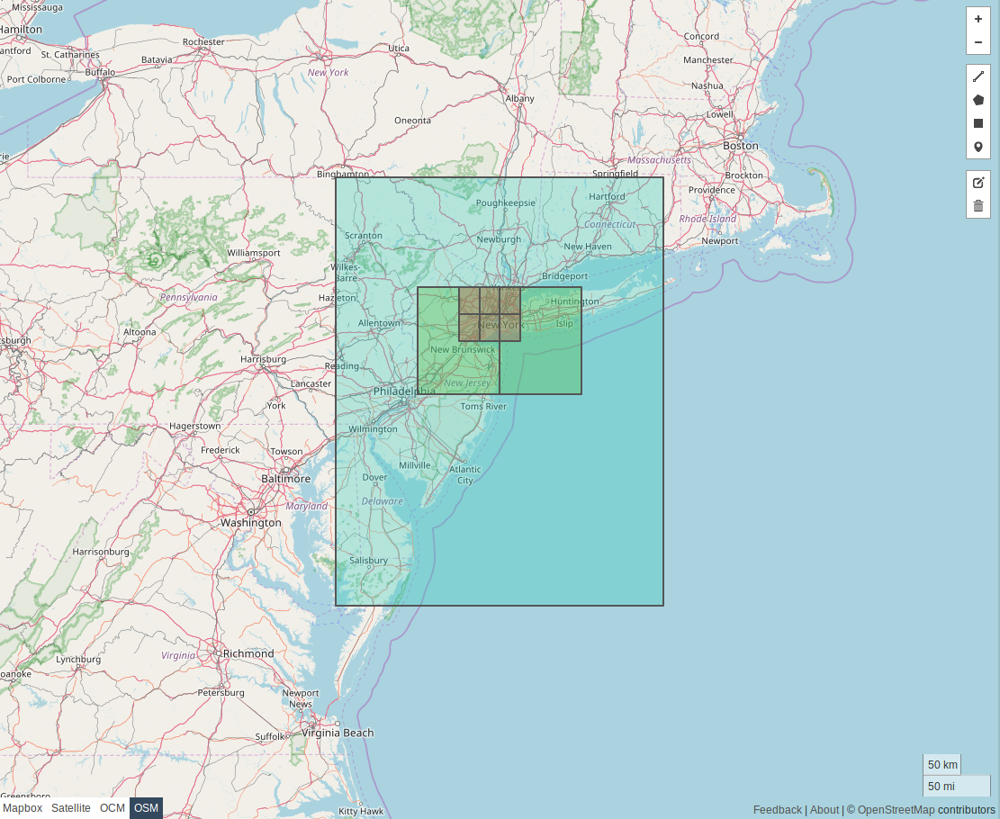

Tile Specifications¶
Introduction¶
A tile represents a small rectangular section of a geographic area. The entire map or geographic region is divided into a grid of square tiles.
Tiles are files in a specific format. They contain information necessary for routing: road network data, access restrictions, administrative information and so on.
Hierarchies/Levels¶
Tiles are arranged into a hierarchy with three levels.
| Hierarchy level | Tile size, degrees | Content |
|---|---|---|
| 0 | 4° | Highway roads: motorway, trunk and primary. |
| 1 | 1° | Arterial roads: secondary and tertiary. |
| 2 | 0.25° | Local roads: unclassified, residential, service or other. |
At each level, the world is split into square tiles with a specific size using the bounding box (-180, -90, 180, 90). The rows and columns start from the bottom left and increase to the top right - tiles are row ordered increasing from west to east.
The World at Level 0¶
The following image shows the world at level 0.
 Image generated using https://geojson.io
Image generated using https://geojson.io
Using bounding boxes for Germany, Pennsylvania, and NYC we can show how the regions would be split up into the 3 levels. Level 0 is colored in light blue. Level 1 is light green and level 2 is light red.
Germany¶
 Image generated using https://geojson.io
Pennsylvania¶
 Image generated using https://geojson.io
NYC¶
 Image generated using https://geojson.io
Sample Tile Code¶
Below are some sample functions to help you obtain latitude and longitude coordinates, levels, tile ids, and lists of tiles that intersect a bounding box.
Working with GraphId¶
See GraphId page for relevant functions.
Working with Latitude and Longitude Coordinates¶
1 2 3 4 5 6 7 8 9 10 11 12 13 14 15 16 17 18 19 20 21 22 23 24 25 26 27 28 29 30 31 32 33 34 35 36 37 38 39 40 41 42 43 44 45 46 47 48 49 50 51 52 53 54 55 56 57 58 59 60 61 62 63 64 65 66 67 68 69 70 71 72 73 74 75 76 | |
>>> get_latlon(73160266)
(41.25, -73.75)
>>> get_latlon(142438865769)
(14.0, 121.0)
>>> get_tile_index_from_latlon(0, 14.601879, 120.972545)
2415
>>> get_tile_index_from_latlon(1, 14.601879, 120.972545)
37740
>>> get_tile_index_from_latlon(2, 41.413203, -73.623787)
756425
>>> from pprint import pp
>>> # NYC bounding box
>>> bottom, left = (40.512764, -74.251961)
>>> top, right = (40.903125, -73.755405)
>>> x = tiles_for_bounding_box(left, bottom, right, top)
>>> pp(sorted(x))
[(0, 2906),
(1, 46905),
(1, 46906),
(2, 752102),
(2, 752103),
(2, 752104),
(2, 753542),
(2, 753543),
(2, 753544)]